Securing Amplification Incubator Foam Inserts
What is Affected
This procedure affects all PANTHER systems and must be performed on install or the next service visit.
This part will be cut in to manufacturing from Panther Serial # 1251, 1253 and higher.
NB: Panther Serial# 1252 and 1261 will NOT have this part installed during manufacturing and will require installation on site.
During shipping or relocating of the system it is possible for the Amplification Incubator foam inserts to fall out of place. These inserts must be inspected and secured in place.
Parts and Materials Required
- Proper PPE
- Panther Tool Kit
 12 x AMP INC FOAM PLASTIC RIVET
12 x AMP INC FOAM PLASTIC RIVET
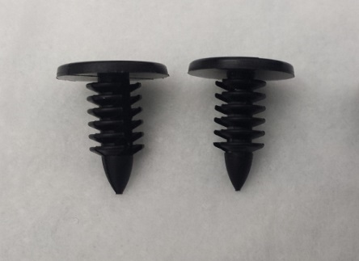
Time Required
- 30 Minutes
Procedure
There are two options for securing the Amp Incubator foam inserts:
- Option A - Remove the Amp Incubator from the Panther and install the rivets on a bench top.
- Option B - Open the Mid Bay drawer and install the rivets from under the Mid Bay drawer.
Option A: Installing Rivets on a Bench Top
- Put on proper PPE.
- Setup a clean and clear bench work space and cover with 2 bench pads.
- Clear MTUs from the Panther using the Service Software.

Caution—If there are MTUs stuck in the Panther System refer to Unloading Undeactivated MTUs from the Panther - Remove the Amplification Incubator.
- Place the Amp Incubator on the bench pads.
- Remove the Incubator cover and visually confirm there are no MTUs still present.
- If MTUs are present refer to Unloading Undeactivated MTUs from Incubators.
- Reinstall the incubator cover.
- Turn the incubator upside down on the bench pads.
- Ensure the gray Incubator Door Board Flex cable is away from the Foam Inserts.
- Check that all six foam inserts are correctly installed as shown below.

Note—Foam inserts may have fallen into the tray below the Amp Incubator. 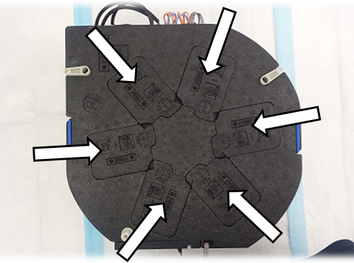
- Secure the 6 foam inserts by pushing the rivets into the locations show below. Use 2 rivets per foam insert.
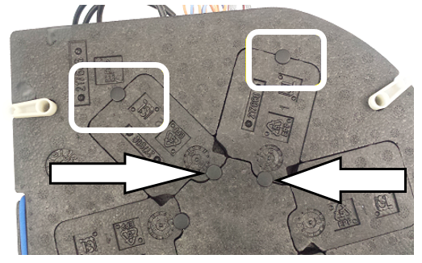
- Reinstall the Amplification Incubator.
Note—Take precaution when inserting the plastic standoff into its mount. - Align the Linear Distributor to the Amp Incubator and verify alignment with a 6 Cycle Amp Incubator System OQ.
Note—Remember to remove the MTU Multi-tube unit—Container used to process tests in the instrument. An MTU contains five separate reaction tubes. The MTU is moved through the instrument by the linear distributor and includes five tiplets for pipettiing to be used in the mag wash station. tiplets before running an OQ on the Amp Incubator. - Option A procedure is complete.
Option B: Installing Rivets from Under the Mid Bay Drawer
- Put on proper PPE.
- Open the Service Drawer.
- Use a 4 mm Hex Driver to remove the 4 screws securing the service drawer front cover.
- Set the Service Drawer front cover aside.
- Use a 3 mm Hex Driver to remove the 3 mounting screws (shown below) that secure the tray beneath the Amplification incubator.
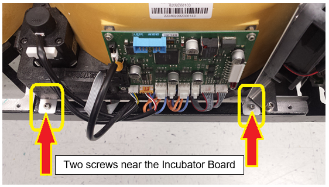
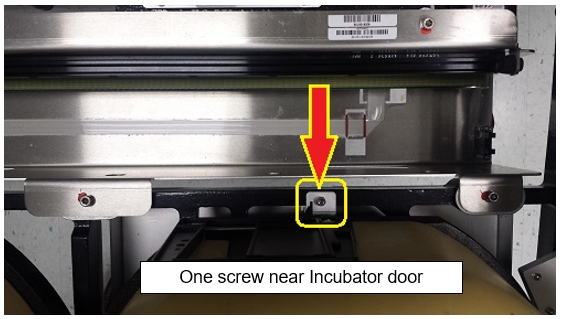
- Place a new bench pad on the floor under the Amp Incubator.
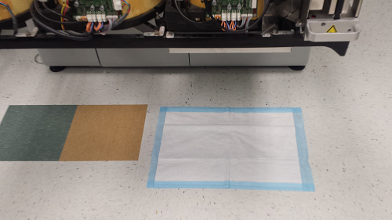
- Remove the Incubator tray from under the Amp Incubator.
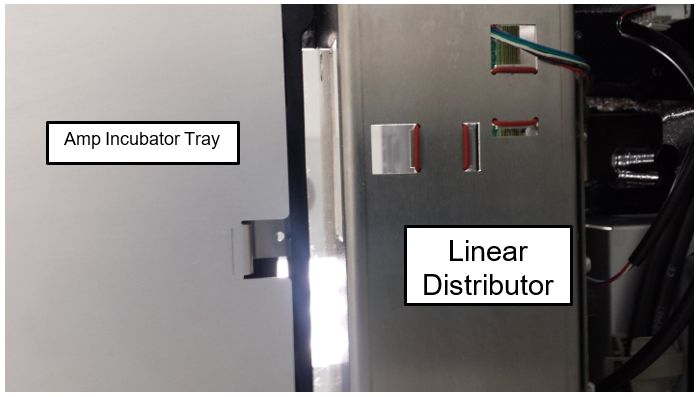
- Place you index finger into the slot nearest the Incubator door and gently push in. The Incubator tray can now be easily lowered and removed.
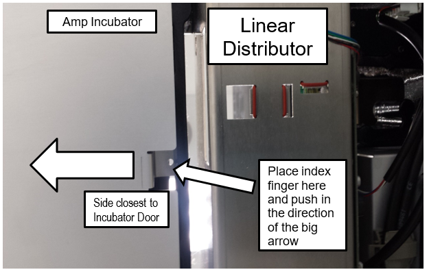
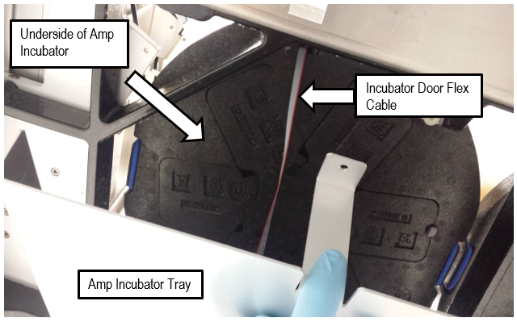
- Set the Incubator Tray aside.
- Check that all 6 foam inserts are in place as seen blow.
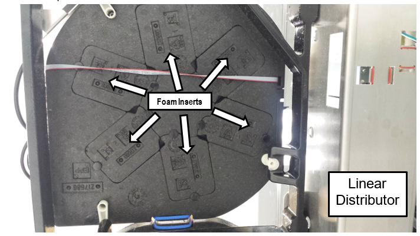
- Secure the 6 foam inserts by pushing the rivets into the locations show below. Use 2 rivets per foam insert.
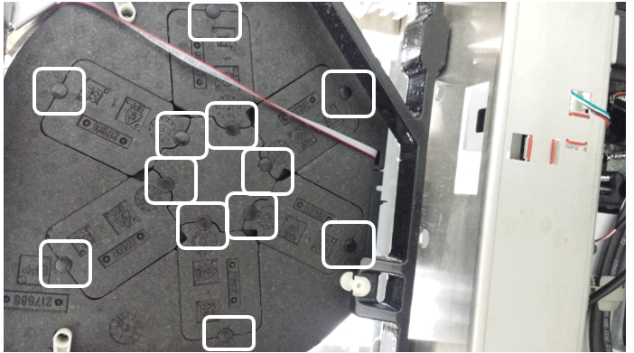
- Reinstall the tray beneath the Amplification Incubator.
- Close the Service Drawer.
- Option B procedure is now complete.
 button at the top of the page to send feedback, comments, or change requests.
button at the top of the page to send feedback, comments, or change requests.